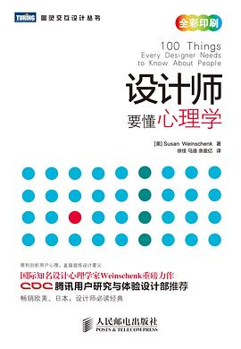
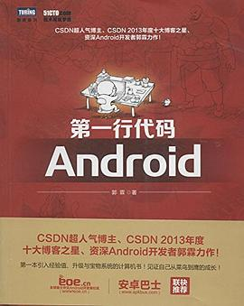
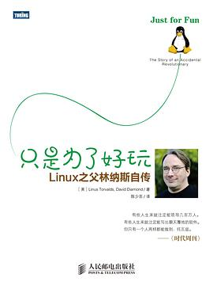
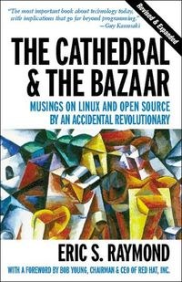

2014-11-30 20:44:34
豆瓣原页
听过 Panorama Of Fall Colors Part.2 ★★★★☆
2014-11-29 21:42:02
豆瓣原页
听过 River Flows In You ★★★★★
感动
2014-11-26 23:03:10
豆瓣原页
看过 前目的地 / Predestination ★★★★☆
电影的逻辑很有趣，循环往复如同Canon。
2014-11-16 00:11:04
豆瓣原页
看过 我是山姆 / I Am Sam ★★★★★
无需多言
2014-11-09 22:53:16
豆瓣原页
看过 招魂 / The Conjuring ★★★★☆
真的好吓人，开着灯看都……
2014-10-26 23:43:29
豆瓣原页
看过 后会无期 ★★★☆☆
引用了不少美国乡村音乐中文版；各种冷笑话；《平凡之路》点赞！片尾点赞！
2014-10-22 22:03:30
豆瓣原页
看过 人类清除计划 / The Purge ★★☆☆☆
我是真的没看懂欸……
2014-10-22 09:39:01
豆瓣原页

读过 设计师要懂心理学 ★★★★☆
2014-10-20 22:50:30
豆瓣原页
看过 亲爱的 ★★★★☆
1毛钱看公益电影，当然，获得不少启发，对于物联网方面还是有很多应用方面的。按照启发给的这个星级！
2014-10-18 00:08:32
豆瓣原页
看过 神盾局特工 第一季 / Agents of S.H.I.E.L.D. Season 1 ★★★★★
超好看！！！超刺激！！！超搞笑！！！
2014-10-14 09:25:22
豆瓣原页

读过 第一行代码 ★★★★☆
给初学者很多经验，很赞
2014-10-05 22:18:16
豆瓣原页

读过 只是为了好玩 ★★★★☆
原来开源可以是这样的想法，当然，对于计算机项目管理又了解了不少。
2014-09-16 12:07:42
豆瓣原页
看过 极品飞车 / Need for Speed ★★★★★
堪称完美，忠实原作！太有激情了！
2014-09-03 21:47:24
豆瓣原页
收藏图书到豆列 Programming - RE & ASM L 捉虫日记
经典BUGs，正向开发必读！
2014-09-03 21:44:37
豆瓣原页
收藏图书到豆列 Worth Reading Again 人月神话
2014-09-03 21:44:15
豆瓣原页

收藏图书到豆列 Worth Reading Again The Cathedral and the Bazaar
2014-09-03 21:42:02
豆瓣原页
读过 The Cathedral and the Bazaar ★★★★★
受益匪浅！作者用自己开发fetchmail的示例来展示市集化开发的方法和特点，其中大量经验值得反复咀嚼！（《人月神话》后又一本经典的经验宝书）
2014-08-03 01:04:33
豆瓣原页
喜欢 stackoverflow
这都有……总之是个全球极品问答站
2014-08-03 01:03:39
豆瓣原页
喜欢 jQuery
Write less, do more with CSS3.